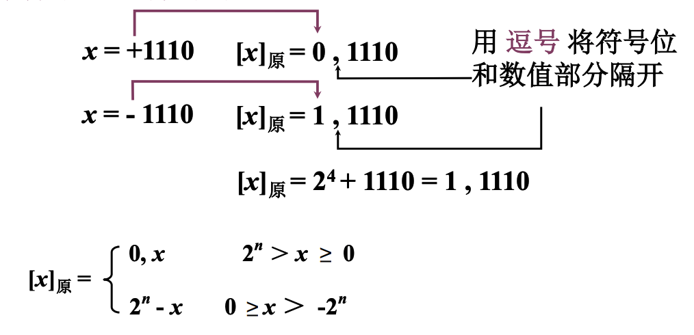
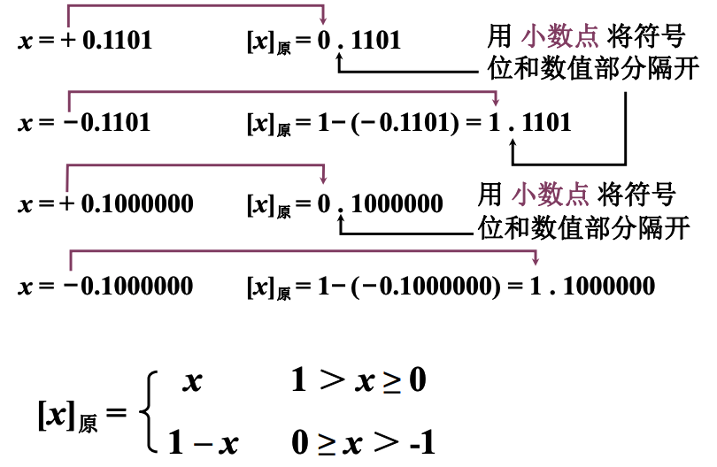
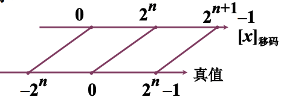
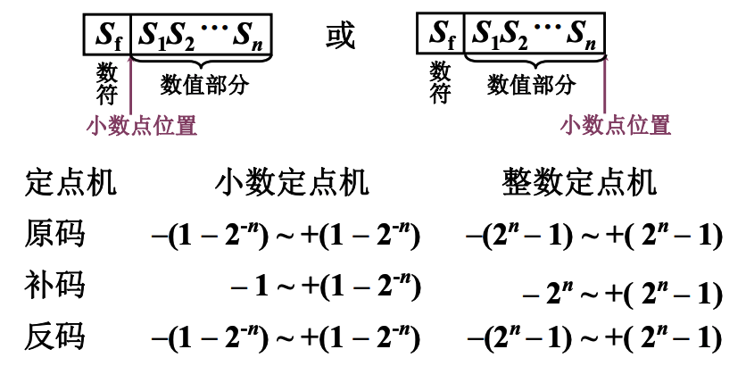
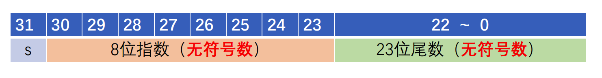
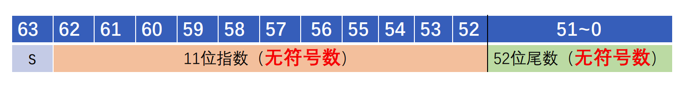
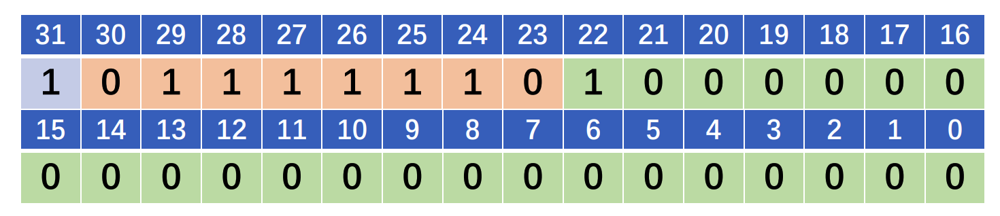
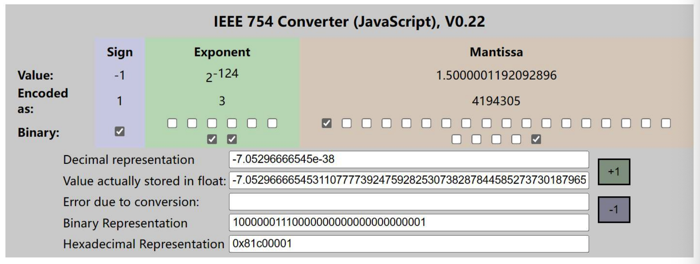

计算机中数的表示
无符号数¶
寄存器的位数反应无符号数的表示范围
有符号数¶
-
真值：带符号的数
-
机器数：符号数字化的数
+0.1011或0.1001
-0.1011
+1100或1100
-1100
非特殊说明，默认二进制表示
位数不是的倍数机器数一般比真值多一位符号位
- 小数和整数在计算机中表示的一模一样？
- 如何表示既有整数又有小数？
原码表示法¶
整数¶
带符号的绝对值表示

小数¶

0的原码？+0与-0原码不一样
补码表示法¶
例：从下午5点一直到凌晨3点，一共经过了多少个小时？
逆时针：有5-2=3
顺时针：有5+10=3+12
则-2可以用+10代替，称+10为-2（以12为模）的补数
一个负数加上“模”即得该负数的补数
正数的补数即为其本身
补码求原码快捷方式¶
- 当真值为负时，补码除符号位外，每位取反，末位加1，即为该负数原码
例：\(x=-1010\)
有\(x_补=-0110\)
反码表示¶
- 整数反码定义：
- 小数反码定义：
三种机器数小结¶
- 最高位为符号位，书写上用“，”（整数）或者“.”（小数）将数值部分和符号位分开
- 对于正数：符号位为0，原码=补码=反码
- 对于负数，补码\(\leftrightarrow\)原码的方法：
- 原码除符号位外每一位取反，末尾加1\(\to\)补码
- 当真值为负时，已知补码求原码方法：
- 补码除了符号位之外，每位取反，末位+1
- 补码除符号位外，末位-1，再每位取反
移码表示¶

x为真值，n为整数的位数
例：\(x=10100\)
\([x]_{移}=2^5+10100=1,10100\)
定点表示¶
- 小数点按照约定方式标出

小数点右移n位，实际上是让表示范围乘上\(2^n\)
浮点表示¶
浮点数一般形式
\(S\)：尾数，\(j\)：阶码，\(r\)：基数
计算机中通常取\(2,4,8,16\)
- 当\(r=2\)，\(N=11.0101=0.110101\times 2^{2}\)（规格化数）
- 计算机中
- \(S\)：小数、可正可负
- \(j\)：整数、可正可负
| j阶码 | S尾数 | ||
|---|---|---|---|
| \(j_f\) | \(j_1j_2\dots j_m\) | \(S_f\) | \(S_1S_2\dots S_n\) |
| 阶符 | 阶码数值部分 | 数符 | 尾数的数值部分 |
\(j_i,S_i\)取0或1
浮点数表示范围¶
- 上溢：阶码>最大阶码
- 下溢：阶码<最小阶码 按机器零处理
例：设机器数字长为24位，想表示±3万的十进制数，在保证数的最大精度的前提下，除阶符、数符各取1位外，阶码数值、尾数数值各取几位？
至少需要15位二进制数才能表示±3万之间的十进制数
\(m=4,n=18\)
浮点数的规格化¶
-
基数不同，浮点数的规格化形式不同（类似科学计数法）
- r=2，尾数最高位为1
- r=4，尾数最高2位不全为0
- r=8，尾数最高3位不全为0
-
尾数和阶码保持不变的情况下，基数r越大，可表示的浮点数
- 范围越大
- 精度越低
二进制浮点数规格化¶
- 二进制规格化数的定义
- 1/2≤|S|<1
- 规格化数的判断
机器判断方法：原码：不论正数、负数，第一数位为1；补码：符号位和第1，数位不同
二进制数规格化特例¶
\(S=-\frac{1}{2}\quad S=-1\)
IEEE 754标准¶
- 减少符号位
- 非 “0” 的有效位最高位为“1”（隐含）
| S（数符） | 阶码 | 尾数 | ||||
|---|---|---|---|---|---|---|
- 单精度（32-bit）

- 双精度（64-bit）

单精度为例
| 指数 | 尾数 | 表示对象 | 换算方法 |
|---|---|---|---|
| 0 | 0 | 0 | 规定（符号位不同，存在+0.0和-0.0） |
| 0 | 非0 | 正负非规格化数 | 正负非规格化数=\((-1)^{S}*(尾数_2)*2^{0-126}\) S代表符号位，1为负数，0为正数 |
| [1:254] | 任意 | 正负浮点数 | 正负浮点数=\((-1)^{S}*(1+{尾数}_2)*2^{(指数-127)}\) |
| 255 | 0 | 正负无穷 | 规定 |
| 255 | 非零 | NaN | 规定 |
尾数前+1？
这个1称为前导数。为了打包更多的位到数中，就在二进制表示中省略了前导数，默认小数点前有1（硬件自动附加1）指数-127？
使用移码的思想，指数-127后，"实际"指数的范围是[-126,127]。二进制表示中的指数部分是无符号数，可以直接进行大小比较。如果两个数的符号相同，那么具有更大二进制指数的数就更大
例：将十进制-0.75转为单精度IEEE754浮点数
\(-0.75_{10}=-0.11_{2}\)
规格化：\(-0.11=-1.1*2^{-1}\)，能够规格化，说明是正负浮点表示
符号位：1；指数部分：126；尾数部分：\(0.1_2\)

IEEE 754浮点数转化工具¶
